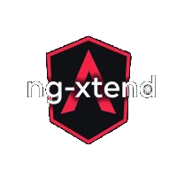
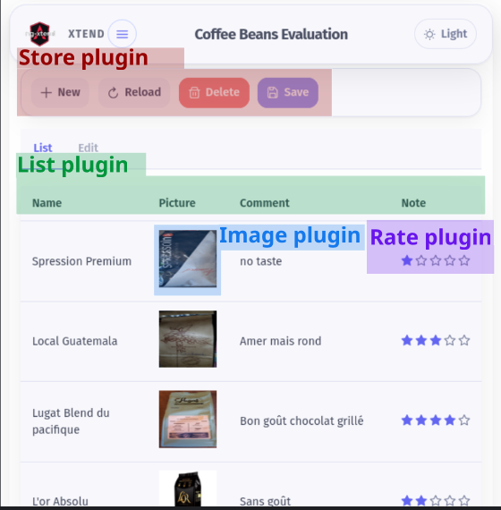
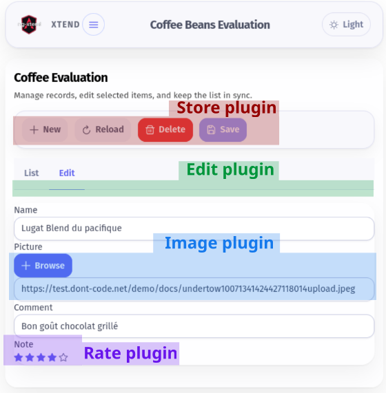

ng-xtend FrameworkBuild extensible Angular applications with dynamic plugins. Add features at runtime, keep your core small, and let teams extend your UI safely.


ng-xtend FrameworkBuild extensible Angular applications with dynamic plugins. Add features at runtime, keep your core small, and let teams extend your UI safely.
Successful platforms like WordPress, Nextcloud, and Drupal became powerful because they were designed to be extended. ng-xtend brings that same model to Angular and TypeScript.
Instead of hard-coding every screen, ng-xtend helps you define a clean data model and expose render points where plugins can contribute the right component, action, or view.
This makes it easier to build applications that are:
A real-world example showing list, view, and edition flows powered entirely by dynamic plugins.
More live demo applications are available here:
Curious about how plugins are dynamically injected? Try the dedicated tester:

If you want the shortest path to value, start here:
The host application does not need to know its plugins at compile time. It simply defines render points and lets the runtime resolve the right extension.
Rating or Currency, it injects the correct component from the loaded plugins.| Type | Description |
|---|---|
| Simple components | Turn regular Angular components into pluggable units for specific data types. |
| Complex components | Components that provide their own extension points. Example: a Money plugin delegating Currency selection to another plugin. |
| List components | Effortlessly display collections of objects by delegating item rendering to the right plugins. |
| Action handlers | Add logic and actionable buttons to your UI dynamically. |
ng-xtend is built to support real-world scenarios where several plugins collaborate together without tight coupling.
Here are screenshots of an application automatically handling list, view, and edition of complex data using ng-xtend, a dont-code application, and the default plugin and web plugin.
You can see how the different plugins work together without knowing each other. Even the host application does not know them.


The ng-xtend-examples repository shows many examples, from basic usage to more advanced plugin scenarios.
To better understand real-world usage, explore the example projects below:
| Example | Description |
|---|---|
| basic-example | Displays any object in various formats in a generic way. |
| typed-example | By describing the type handled, ng-xtend supports more use cases. |
| plugin-example | Countries and Money fields look nicer thanks to the newly added plugins. |
| inout-example | A full list / edit / view flow is set up thanks to inputs and outputs connecting unknown components together. |
| store-example | Edited elements are persisted between sessions thanks to the xt-store library included with ng-xtend. |
| advanced-type-example | Showcase support for advanced types and models, like references. |
| dynamic-example | Loads all plugins dynamically from another website using Native Federation. |
We use a monorepo structure powered by Rush.
npm install -g @microsoft/rush
rush update
rush build npm install -g @microsoft/rush
rush update
rush buildng serve sample-tester for the sample plugin.ng serve plugin-tester in xt-plugin-tester directory.To use ng-xtend plugins in your own Angular application, xt-host project is a great example. It does:
npm install xt-components xt-type xt-store
npm install xt-plugin-default protected resolverService = inject(XtResolverService);
this.resolverService.loadPlugin(url);The plugins will register themselves automatically.
this.resolverService.registerTypes({
money: {
amount: 'number',
currency: 'currency' /** Type provided by the finance plugin **/
},
book: {
name: 'string',
publication: 'date',
price: 'money',
notation: 'rating' /** Type provided by the web plugin **/
}
}); <h1>List of books</h1>
<xt-render [displayMode]="LIST_VIEW" [valueType]="book" [value]="listOfBooks"></xt-render>Or allow editing a book’s information:
<h1>Enter your book details</h1>
<div form="bookForm">
<xt-render [displayMode]="FULL_EDITABLE" [valueType]="book" [formGroup]="bookForm" subName="book"></xt-render>
</div>For more complex scenarios, use:
<xt-render-sub [context]="context()"></xt-render-sub>with context() returning type information necessary to select the right component.
ng-xtend is designed around Angular and TypeScript, so it fits naturally into Angular applications and libraries.
No. One of the main goals of ng-xtend is dynamic loading, so plugins can be loaded at runtime.
Yes. Plugins can expose types, renderers, and actions that other plugins resolve dynamically.
The best starting point is the examples repository, then the plugin tester docs.
Please check my other project Dont-code. If you want to discuss the framework or suggest improvements, you can reach out at contact@ng-xtend.dev or developer@dont-code.net.